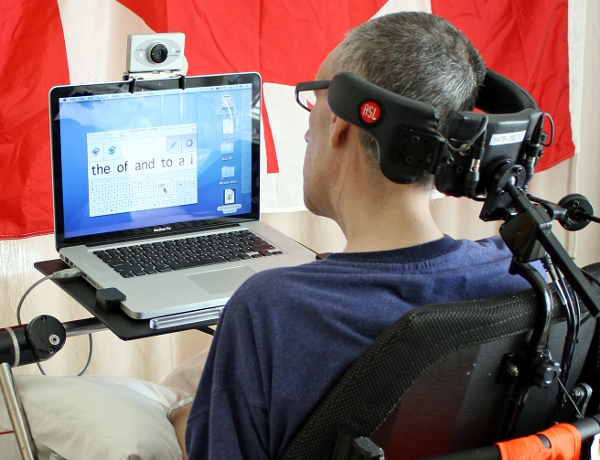

Periféricos
Periféricos são equipamentos que enviam ou recebem informações pro computador, logo qualquer aparelho que esteja ligado ao computador é definido como periférico.
Periféricos de Entrada
São responsáveis por enviar informações ao computador. Ex: mouse, teclado, webcam.
Fonte: www.multsystems.com.br/loja/produto-31009-543-kit_teclado_e_mouse_600_usb_microsoftPeriféricos de Saída
São responsáveis por receber informações que foram enviada para o computador. Ex: monitor, impressora.
Fonte: pixabay.com/pt/monitor-tela-apartamento-lcd-black-32743/Tecnologia assistiva
É todo arsenal de Recurso e Serviços que proporciona ou amplia habilidades funcionais de pessoas com deficiência que visa promover sua vida independente e inclusão.
Os serviços de Tecnologia Assistiva são normalmente transdisciplinares envolvendo profissionais de diversas áreas.
A Tecnologia Assistiva visa melhorar a FUNCIONALIDADE de pessoas com deficiência. O termo funcionalidade deve ser entendido num sentido maior do que habilidade em realizar tarefa de interesse.
 Fonte: facilitandoacessibilidade.wordpress.com/2015/04/02/tecnologia-assistiva/